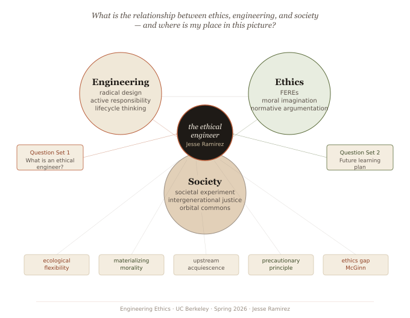

Engineering Ethics Portfolio
Ethics, Engineering,
and Society

Portfolio Contents
Navigate through the sections below or use the sidebar. Each section corresponds to an assignment or reflection from the semester.
01
Final Reflection
The overarching essay on ethics, engineering, and society
02
Annexe
15 concepts, 8 EiN cases, and extended reading analysis
03
Future Learning Plan
Habits, resources, and goals going forward
04
Critical Reflection
Deep-dive reflection on a theme from the semester
05
Interview Summary
Practitioner perspectives on engineering ethics
06
Ethics in the News
Analysis of orbital edge computing and space ethics
07
EiN Review
Final reviewer analysis of assigned author's work
08
Project Proposal
Initial space debris project proposal and plan
09
Group Project Write-Up
Final group write-up on space debris and engineering ethics
10
Civic Engagement
Space debris commentary and ethics analysis
11
Personal Reflection
Individual reflection and peer evaluation
12
About Me
Background, interests, and where I am headed
13
AI Acknowledgment
Disclosure of AI tools used in this portfolio